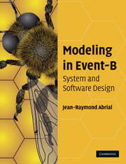

A Generic Event-B Theory for the Formalisation
of the International System of Units
This work was supported by a grant from the French national research agency ANR ANR-19-CE25-0010 (EBRP Project).
$18^{th}$ International Conference on Verification and Evaluation of Computer and Communication Systems
Centre d'intégration Nano-INNOV - CEA-LIST, Palaiseau, France 5-6 November 2025
Centre d'intégration Nano-INNOV - CEA-LIST, Palaiseau, France 5-6 November 2025

The Event-B method
- The Event-B method is an evolution of the classical
B method.
- modeling a system by a set of events instead of operations.
- The Event-B method is a formal method based on
first-order logic and set theory. - The Event-B method is based on :
- the notions of pre-conditions and post-conditions (Hoare),
- the weakest pre-condition (Dijkstra),
- and the calculus of substitution (Abrial).
Using Event-B method

-
The Rodin platform (an Eclipse-based IDE)
is intended to support the construction and verification of Event-B models. - The use of the Event-B method has continued
to increase.- applied to various applications and domains.
- railway, automotive, aeronautics, cybersecurity, nuclear-energy, ...
- The Event-B method is adapted to analyse discrete systems.
- offers the possibility of modelling discrete behaviors.
The Event-B method
Models and proof obligations
CONTEXT $ctx_1$
EXTENDS $ctx_2$
SETS $s$
CONSTANTS $c$
AXIOMS
$A(s,c)$
THEOREMS
$T(s,c)$
END
MACHINE $mch_1$
REFINES $mch_2$
SEES $ctx_i$
VARIABLES $v$
INVARIANTS
$I(s,c,v)$
THEOREMS
$T(s,c,v)$
EVENTS
$[events\_list]$
END
$event$ $\mathrel{\widehat=}$
any $x$
where
$G(s,c,v,x)$
then
$BA(s,c,v,x,v')$
end
$A(s,c) ~~~\vdash~~~ T(s,c) $
$A(s,c) \land I(s,c,v) ~~~\vdash~~~ T(s,c,v)$
$A(s,c) \land I(s,c,v) \land G(s,c,v,x) ~~~\vdash~~~ \exists v'.BA(s,c,v,x,v')$
$A(s,c) \land I(s,c,v) \land G(s,c,v,x) \land BA(s,c,v,x,v') ~~~\vdash~~~ I(s,c,v')$
$...$
$A(s,c) \land I(s,c,v) ~~~\vdash~~~ T(s,c,v)$
$A(s,c) \land I(s,c,v) \land G(s,c,v,x) ~~~\vdash~~~ \exists v'.BA(s,c,v,x,v')$
$A(s,c) \land I(s,c,v) \land G(s,c,v,x) \land BA(s,c,v,x,v') ~~~\vdash~~~ I(s,c,v')$
$...$
The Event-B method
Static Type Checking
- Event-B supports static type checking using tools such as Rodin or AtelierB.
- These tools generate proof obligations (POs) to check the correct use of arithmetic operations (Well-Defined proof obligations - WD POs).
- WD POs ensure that expressions (axioms, theorems, invariants, guards, actions, etc.) are mathematically well-defined.
- Example $\to$ for the expression $x \div y$, a WD PO ensures that $y \neq 0$.
The Event-B method
The theory plugin
- Theory Plug-in provides capabilities to extend
the Event-B mathematical language and the Rodin proving infrastructure. - An Event-B theory can contain :
- new datatype definitions,
- new polymorphic operator definitions,
- axiomatic definitions,
- theorems,
- associated rewrite and inference rules.
THEORY $thy_1$
IMPORT $thy_2$
DATATYPES
$DT_1,...,DT_n$
OPERATORS
$OP_{11},...,OP_{1n}$
AXIOMATIC DEFINITIONS
operators
$OP_{21},...,OP_{2n}$
axioms
$A$
THEOREMS
$T$
PROOF RULES
$PR$
END
-
Michael J. Butler and Issam Maamria.
Practical theory extension in Event-B. Theories of Programming and Formal Methods. 2013. -
Thai Son Hoang, Laurent Voisin, Asieh Salehi, Michael J. Butler, Toby Wilkinson, and Nicolas Beauger.
Theory plug-in for Rodin 3.x. CoRR, abs/1701.08625, 2017.
The Event-B method
The theory plugin
THEORY $thy_1$
IMPORT $thy_2$
DATATYPES
$DT_1,...,DT_n$
OPERATORS
$OP_{11},...,OP_{1n}$
AXIOMATIC DEFINITIONS
operators
$OP_{21},...,OP_{2n}$
axioms
$A$
THEOREMS
$T$
PROOF RULES
$PR$
END
CONTEXT $ctx_1$ EXTENDS $ctx_2$ SETS $s$ CONSTANTS $c$ AXIOMS $A(s,c)$ THEOREMS $T(s,c)$ END
MACHINE $mch_1$ REFINES $mch_2$ SEES $ctx_i$ VARIABLES $v$ INVARIANTS $I(s,c,v)$ THEOREMS $T(s,c,v)$ EVENTS $[events\_list]$ END
A simple example
System that continuously calculates a moving object's speed

Analysing two functional properties:
- PROP-1 : the velocity of the moving object is equal to the
$distance\_travelled$
divided by the$measured\_time$ ($v = d/t$ ). - PROP-2 : when the
$distance\_travelled$ is strictly positive, the$speed$
of the moving object must also be strictly positive.- the object moves when its
$speed$ is different from zero.
- the object moves when its
The Event-B model
MACHINE mch_integer_version
...
INVARIANTS
@inv1: distance_travelled $\in$ $\mathbb N$ // km
@inv2: measured_time $\in$ $\mathbb N_1$ // s
@inv3: speed $\in$ $\mathbb N$ // km/h
@inv4: starting_position $\in$ $\mathbb N$
@inv5: starting_time $\in$ $\mathbb N$
@inv6: speed $=$ distance_travelled $\div$ measured_time // PROP-1
@inv7: distance_travelled $>$ $0$ $\mathbin\Rightarrow$ speed $>$ $0$ // PROP-2
The Event-B model
MACHINE mch_integer_version
...
EVENTS
...
get_starting_point $\mathrel{\widehat=}$
any p t
where
@grd1: p $\in$ $\mathbb N_1$
@grd2: t $\in$ $\mathbb N_1$
then
@act1: starting_position $:=$ p
@act2: starting_time $:=$ t
end
...
END
MACHINE mch_integer_version
...
EVENTS
...
get_speed $\mathrel{\widehat=}$
any p t
where
@grd1: p $\in$ $\mathbb N_1$ $\land$ p $>$ starting_position
@grd2: t $\in$ $\mathbb N_1$ $\land$ t $>$ starting_time
then
@act1: distance_travelled $:=$ p $-$ starting_position
@act2: measured_time $:=$ t $-$ starting_time
@act3: speed $:=$ (p $-$ starting_position) $\div$ (t $-$ starting_time)
end
END
generated and proven POs

- All POs are green
except the one for maintaining
the$@inv7$ invariant by the$get\_speed$ event. -
PROP 2 $\to$
$distance\_travelled \neq 0$ when$speed \neq 0$ .-
the value of
$distance\_travelled$ can be$\lt$ the value of$measured\_time$ . - the value of
$speed$ can be$= 0$
($distance\_travelled \div measured\_time$ ) while$distance\_travelled \neq 0$
-
the value of
-
No possibility to check the consistency of formulas annotated with measurement units.
- Example: is the unit of
speed (km/h ) the same with the unit of the expressiondistance_travelled $\div$ measured_time (km $\div$ s ) ?
- Example: is the unit of
Challenges in Modelling CPS Systems
- More generally, Cyber-Physical Systems (CPS) models often require variables/expressions, formalising measurements/physics and mechanics laws.
-
Event-B does not support measurements unit annotations for such variables
and using integer variables is not sufficient to handle small values ($0 < v < 1$).- converting from the smallest point of view to the most significant ones
- from
Milli toKilo , for example
-
Formal verification of CPS systems requires a physical measurement model,
e.g. the International System of Units (SI). - Using explicit units improves the CPS validation process by ensuring unit compatibility in arithmetic expressions.
The Objectives
- New syntaxe to formally annotate Event-B variables with measurement units.
- New generaic arithmetic operators for the annotated variables.
- New Well-Defined Proof Obligations (WD POs) to ensure unit consistency.
- Automatic checking of correct unit usage in arithmetic expressions.
-
Example: $d = v / 2~a$
$\to$ must ensure that the unit of $d$ matches that of $v / 2~a$.
Proposed approach

Proposed approach

floating-point numbers
$$
x = 3.14159265359 =
\underset{\text{significand}}{\underbrace{314159265359}} \times
\underset{\text{base}}{\underbrace{10}}^{\overset{\text{exponent}}{\overbrace{-11}}}
$$
We have chosen that the base always equals ten in our models.
$$
x = s(x) \times 10^{e(x)}
$$
- The proposed theory does not model limited precision.
- The operators defined in the theory involve no precision loss.
Proposed approach

Proposed approach

Proposed approach

Proposed approach

Proposed approach

Proposed approach

Conclusion - Proposal
- Develop a measurement units theory using the Theory plugin.
- Extend the Event-B type-checking system to handle reasoning about measurement units.
- Introduce a formal method for annotating Event-B variables with their associated units of measurement.